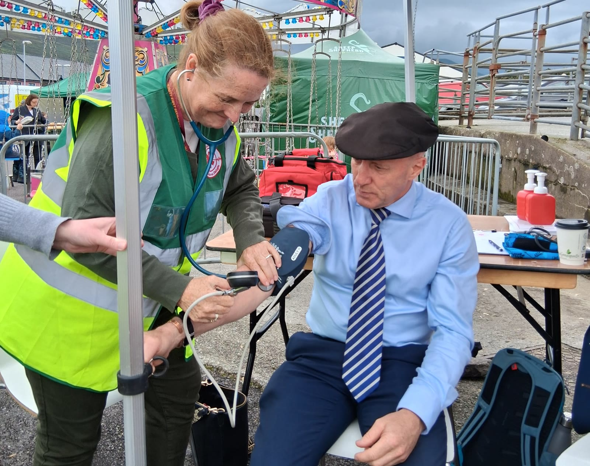
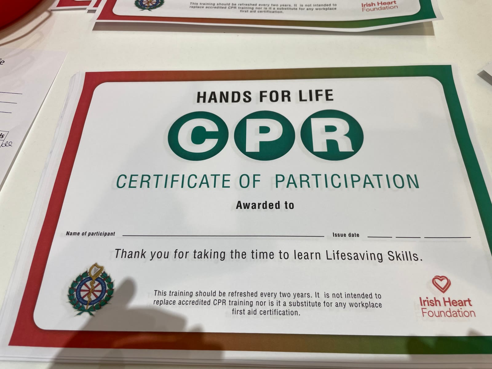
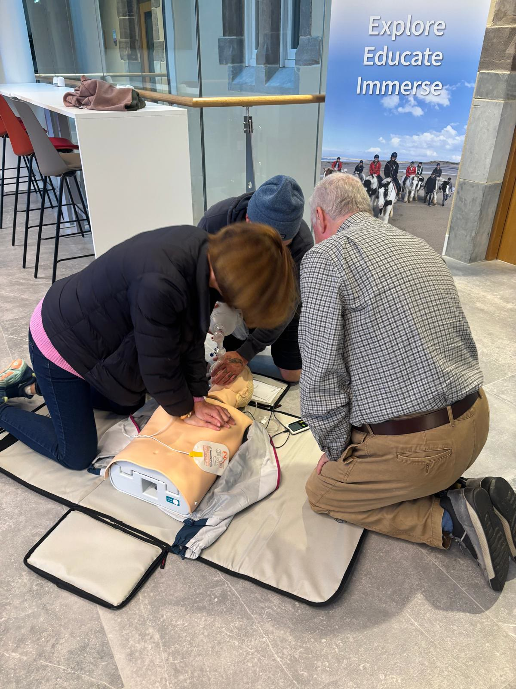
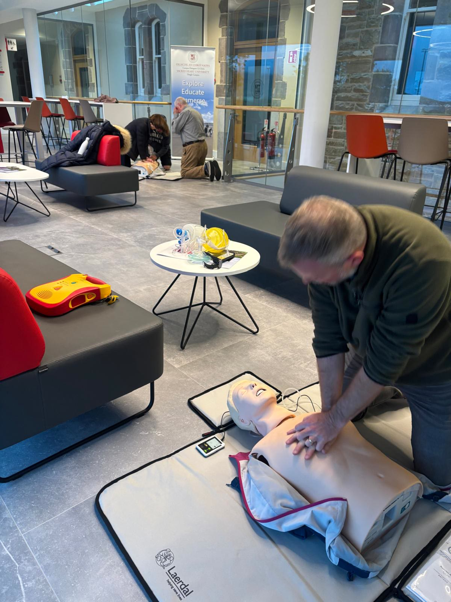
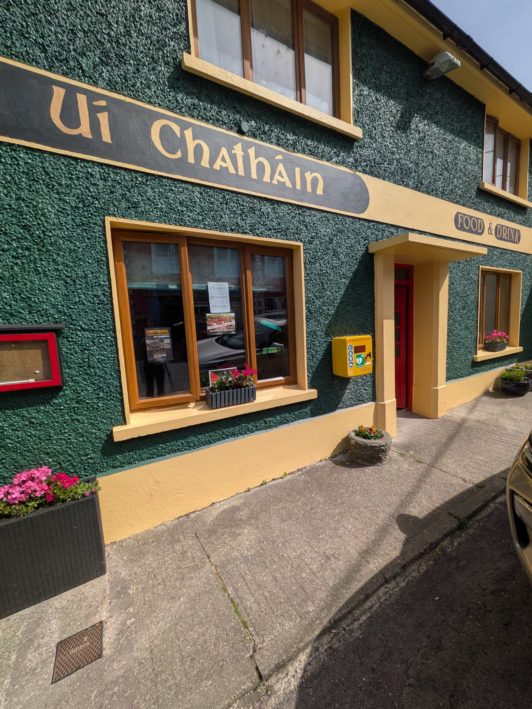

Resources
Ten tips to keep your heart young and your energy up
A major review in the European Heart Journal has distilled decades of research into ten powerful, science-backed habits that help keep your heart healthy and slow the ageing process. The best part? These same habits also lower the risk of many chronic diseases and boost overall wellbeing.

Heart health
Your heart-healthy top ten tips
- Trim the waistline with a nutrient-rich diet and resistance training to build strong, protective muscle.
- Choose a Mediterranean-style plate filled with colourful plants, healthy fats and minimally processed foods.
- Try intermittent fasting (8-10 hr window) to support metabolic health and weight management.
- Exercise daily, alternating 30–60 minutes of HIIT, weights, walking, cycling or dancing.
- Avoid or limit alcohol to protect your heart, liver and prevent cancer.
- Say no to smoking to significantly reduce the risk of heart disease, stroke, cancer, dementia, and chronic respiratory diseases.
- Prioritise 7-9 hrs of restorative sleep to support memory, immunity and heart repair.
- Nourish your mind and spirit and reduce mental stress through mindfulness, cognitive therapy and artistic/philosophical spiritual practices.
- Cultivate meaningful relationships, compassion and altruism: deep connection with family and friends through empathic communication and forgiveness is a potent longevity booster.
- Minimise pollution exposure and reconnect with Nature to reduce oxidative stress and lift mood.
These insights come from researchers Maria L. Cagigas, Stephen M. Twigg and Luigi Fontana, who brought together the strongest scientific evidence on how to protect both heart and metabolic health.
You can explore the full article here.
Training and education videos
Learn CPR, FAST and how to use an AED in minutes


Videos play from YouTube when you press play.

Keep your skills fresh
Refresh your CPR every two years
Hands for Life certificates say it plainly: CPR training should be refreshed every two years. Our community workshops are a friendly way to learn for the first time or brush up.
Gallery
Community resources gallery
Explore our community training sessions and local resources.



